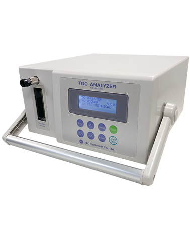

Faster, more flexible TOC measurement.
Uninterrupted monitoring in TOC measurement is an essential requirement for modern high-throughput production processes. For the past 20 years, T&C Technical has been developing continuous measurement technology for TOC analyzers to achieve this, and providing the benefits of this technology to many customers both in Japan and overseas. Every case is designed and developed domestically, with meticulous attention paid to everything from firmware to hardware, which is unique to Japan.

- USP/EP compatible
- TOC meter fully compatible with ultra-pure water with TOC of 1 ppb or less
- Complete in-line continuous TOC measurement
- Extensive network functionality
- Uses high-output UV lamps
- Specially processed UV oxidation chamber
- Easy to operate, maintenance-free, user-friendly TOC meter
- TOC meter that does not use reagents or carrier gas
- No contamination occurs from the liquid-contacting parts inside the TOC meter
- The sample path during reagent calibration and measurement is the same.
| Item / Application examples | ||||
|---|---|---|---|---|
| Semiconductors/Ultra-pure water | Semiconductor/LCD Ultrapure Water | Medicine and Pharmaceuticals WFI/PW | Ultra pure water Desk-top type demineralizer※1 | |
| Model | TAC-ACCURA-SXII | TAC-ACCURA-RII | TAC-ACCURA-HII | ACCURA-Mini-α |
| Measurement method | UV oxidation conductivity detection method | |||
| Measurement Range | 0.01-30.000ppb | 0.1-999.99ppb | 0.1-999.99ppb | 1－200ppb |
| Repeatability | ±0.05ppb | ±0.1ppb | ±5%RD | |
| Resolution | 0.001ppb | 0.01ppb | 0.01ppb | 1ppb |
| Water volume | Approx. 100mL/min*2 | |||
| Water Pressure | 0.03 – 0.5MPa | 0.05-0.5Mpa | ||
| Water quality | > 10MΩ/cm | > 1MΩ/cm | < 20µ/cm | ＞5MΩ・cm |
| Water temperature | 15-40°C | 5-50°C | 5-99°C | 5－35℃ |
| Ambient temperature | 5-40°C | 5-40°C | 5-40°C | 5－35℃ |
| Ambient Humidity | 5-80% RH (no condensation) | |||
| Power supply and power consumption | AC100-240V ± 10% 50/60Hz Approx. 50W Universal specification | AC100-120V ±10% AC100-240V ±10% 50/60Hz approx. 30W（DC24V） | ||
| Size | W327 × H216.5 × D369mm*3 | W130×H125×D229mm | ||
| Weight | Approx. 5.7 kg | approx. 1.5Kg | ||
| Alarm Output | Relay contact 2 output Contact capacity: AC125V/0.4A or less or DC30V/2A or less |
no spec. | ||
| Output Signal | 4-20mA DC (Select from TOC, conductivity, or water temperature) | |||
| Communication | RS232C, RS485 | RS-485 | ||
| printer | Connect via RS232C printer port | no spec. | ||
| reagent | Not required | |||
| Oxidant | Not required | |||
| Carrier Gas | Not required | |||
| option | I) Automatic sample water switching device II) Sample water dilution device III) Inorganic carbon removal device
IV) High-purity air supply unit V) Offline measurement pump (※Not applicable to some models) |
|||